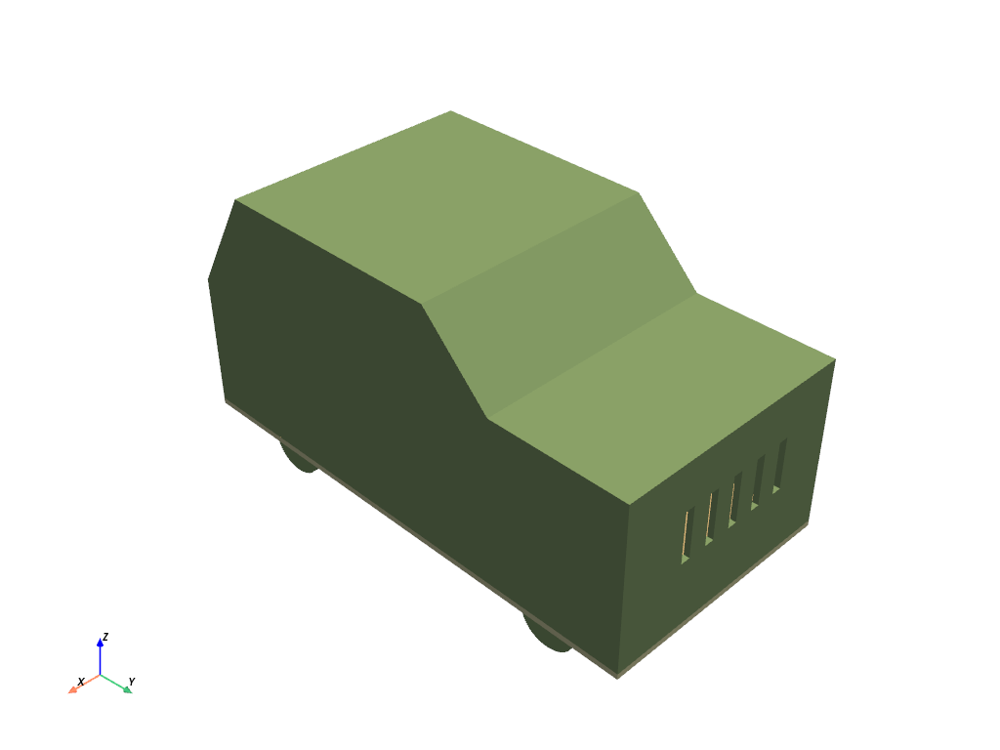
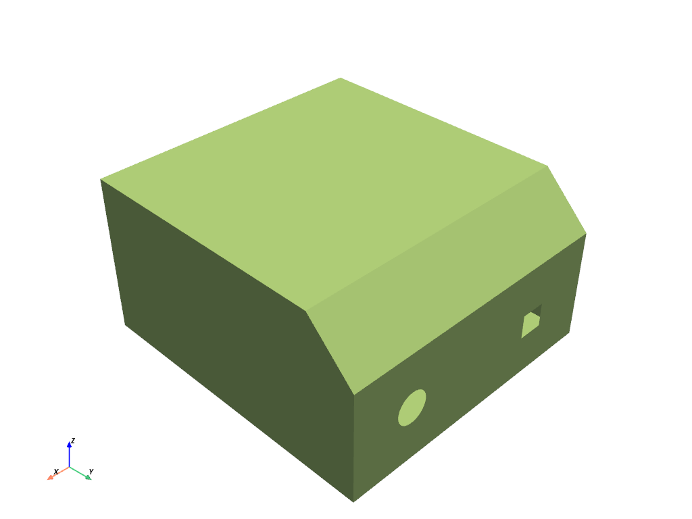
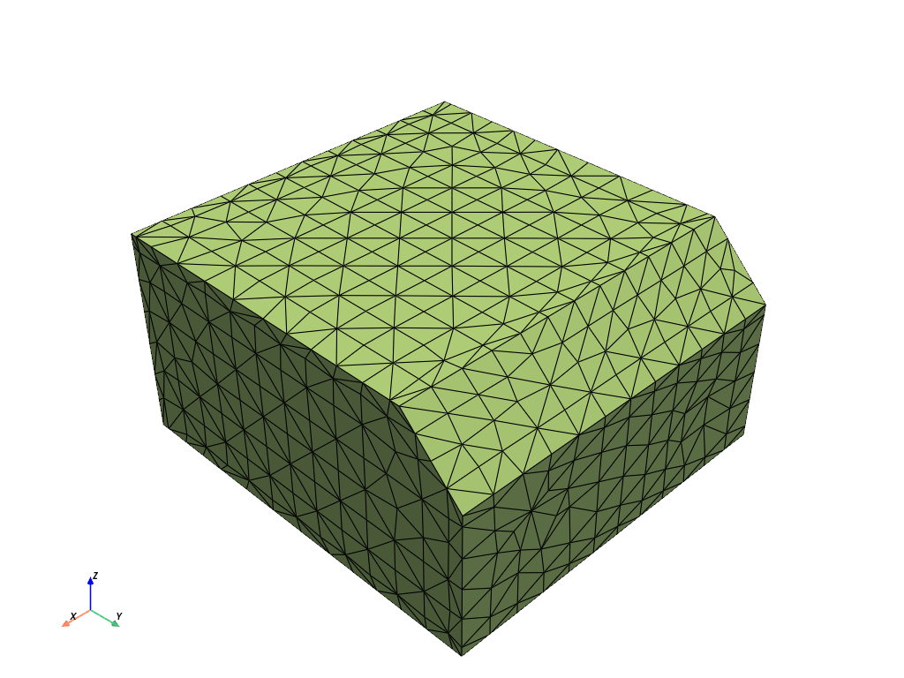
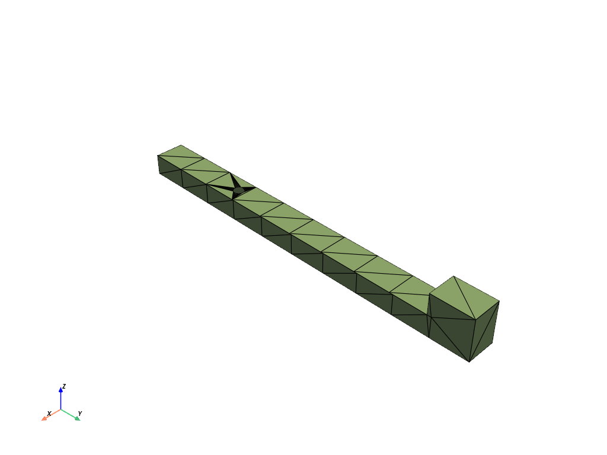
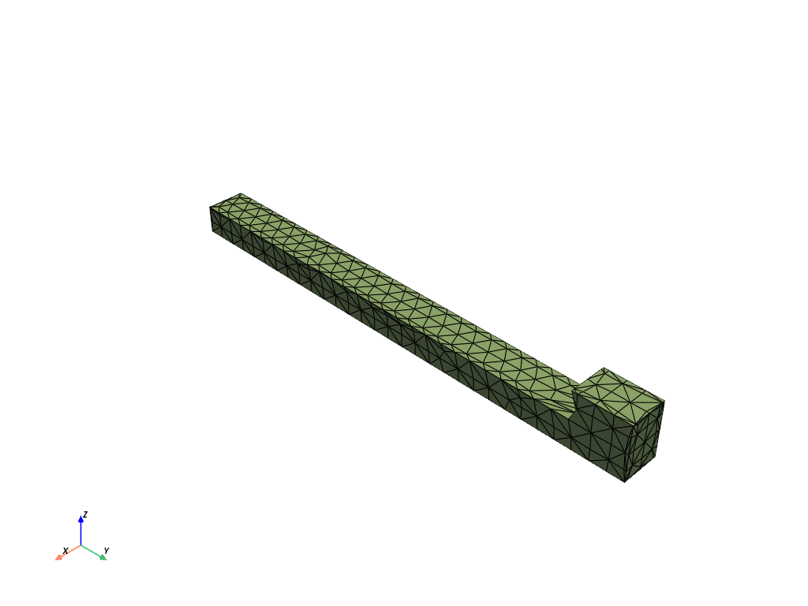
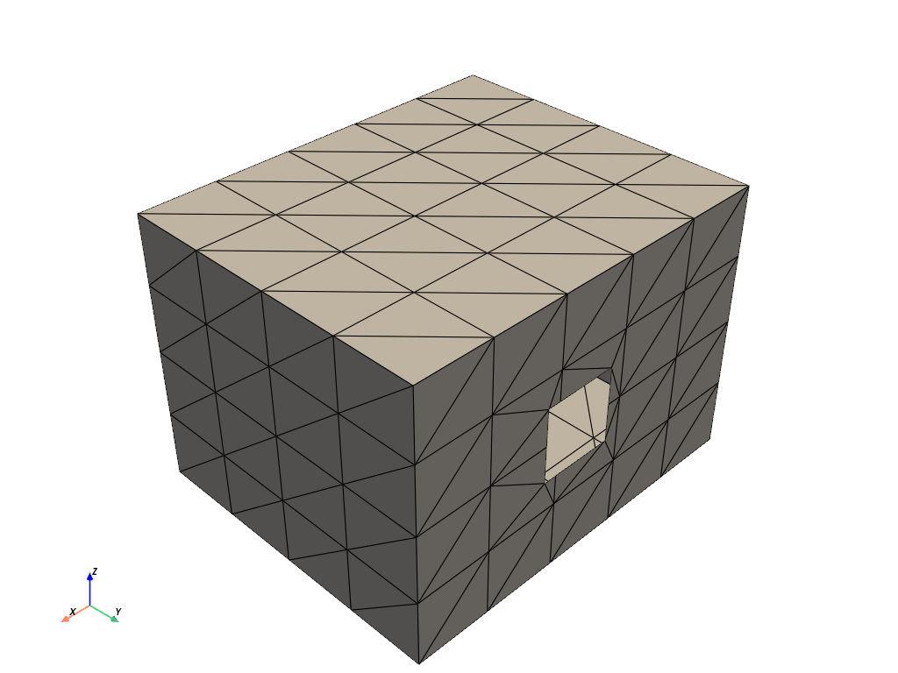
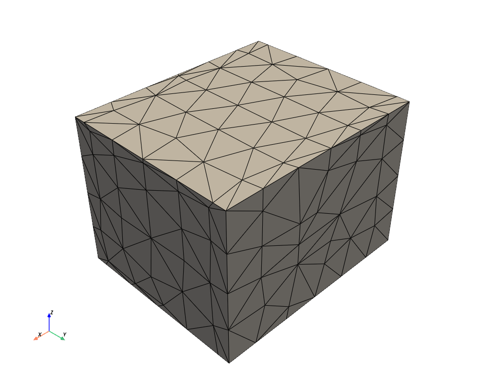

Note
Go to the end to download the full example code
Wrapping a toy car for a flow analysis#
Summary: This example demonstrates how to wrap a toy car for a flow analysis.
Objective#
This example wraps a toy car and volume meshes with a tetrahedral mesh with prisms.
It uses several meshing utilities available in the lucid class for convenience and ease.

Procedure#
Launch an Ansys Prime Server instance and instantiate the meshing utilities from the
lucidclass.Import the geometry.
Coarse wrap parts with holes to clean up.
Extract the fluid region using a wrapper.
Check that the wrap surface is closed and that the quality is suitable.
Mesh only fluid with tetrahedral elements and boundary layer refinement.
Create face zones from labels imported from the geometry.
Print statistics on the generated mesh.
Improve the mesh quality.
Write a CAS file for use in the Fluent solver.
Exit the PyPrimeMesh session.
Launch Ansys Prime Server#
Import all necessary modules and launch an instance of Ansys Prime Server.
From the PyPrimeMesh client get the model.
Instantiate meshing utilities from the lucid class.
import os
import tempfile
import ansys.meshing.prime as prime
from ansys.meshing.prime.graphics import Graphics
prime_client = prime.launch_prime()
model = prime_client.model
display = Graphics(model=model)
mesh_util = prime.lucid.Mesh(model)
Import geometry#
Download the toy car geometry (FMD) file exported by SpaceClaim. Import the geometry and display everything except the tunnel.
Close holes#
Several parts are open surfaces (with holes). Coarse wrap to close the holes and delete the originals. You could use leakage detection to close these regions. This example uses a coarse wrap and disables feature edge refinement to walk over the holes. As this is not the final wrap, this example does not remesh after the wrap. Wrapping each object in turn avoids coarse wrap bridging across narrow gaps.
coarse_wrap = {"cabin": 1.5, "exhaust": 0.6, "engine": 1.5}
for part_name in coarse_wrap:
# Each open part before wrap
display(scope=prime.ScopeDefinition(model, part_expression=part_name))
closed_part = mesh_util.wrap(
input_parts=part_name,
max_size=coarse_wrap[part_name],
remesh_postwrap=False,
enable_feature_octree_refinement=False,
)
# Closed part with no hole
display(scope=prime.ScopeDefinition(model, part_expression=closed_part.name))
- 
- 
- 
- 
- 
- 
Extract fluid using a wrapper#
Wrap the full model and extract the largest internal region as the fluid.
Create edges at intersecting regions to improve the quality.
Refine mesh to avoid contact between different parts.
The new wrap object replaces all original geometry unless keep_input
is set to True. Volumes are generated from the wrap for use later.
wrap_part = mesh_util.wrap(
min_size=0.1,
max_size=2.0,
region_extract=prime.WrapRegion.LARGESTINTERNAL,
create_intersection_loops=True,
contact_prevention_size=0.1,
)
print(model)
Part Summary:
Part Name: __wrap__.3
Part ID: 23
1 Edge Zonelets
93 Face Zonelets
0 Cell Zonelets
0 Edge Zones
Edge Zone Name(s) : []
5 Face Zones
Face Zone Name(s) : [surface, surface.1, cabin, exhaust, engine]
6 Volume Zones
Volume Zone Name(s) : [__wrap__.2, __wrap__.1, __wrap__, component25, component24, tunnel.1]
24 Label(s)
Names: [___geom_features___, __extracted__features__, __intersect_loops__, __wrap__, __wrap__.1, __wrap__.2, cabin, component21, component22, component24, component25, engine, exhaust, ground, inlet, outer, outlet, overlap_floor, tunnel, unreferenced, wheel_1, wheel_2, wheel_3, wheel_4]
Bounding box (-31.1366 -59.1336 1.49047)
(29.3366 40.1337 52.0558)
Check wrap#
Check that the wrap surface is closed and that the quality is suitable to use as surface mesh.
scope = prime.ScopeDefinition(model=model, part_expression=wrap_part.name)
diag = prime.SurfaceSearch(model)
diag_params = prime.SurfaceDiagnosticSummaryParams(
model,
scope=scope,
compute_free_edges=True,
compute_multi_edges=True,
compute_self_intersections=True,
)
diag_res = diag.get_surface_diagnostic_summary(diag_params)
print('Number of free edges', diag_res.n_free_edges)
print('Number of multi edges', diag_res.n_multi_edges)
print('Number of self intersections', diag_res.n_self_intersections)
face_quality_measures = [prime.FaceQualityMeasure.SKEWNESS, prime.FaceQualityMeasure.ASPECTRATIO]
quality_params = prime.SurfaceQualitySummaryParams(
model=model, scope=scope, face_quality_measures=face_quality_measures, quality_limit=[0.9, 20]
)
quality = prime.SurfaceSearch(model)
qual_summary_res = quality.get_surface_quality_summary(quality_params)
for summary_res in qual_summary_res.quality_results:
print("\nMax value of ", summary_res.measure_name, ": ", summary_res.max_quality)
print("Faces above limit: ", summary_res.n_found)
Number of free edges 0
Number of multi edges 0
Number of self intersections 0
Max value of Skewness : 0.885404
Faces above limit: 0
Max value of AspectRatio : 14.583
Faces above limit: 0
Create zones#
Create face zones from labels imported from the geometry that can be used
in the solver to define boundary conditions.
If specifying individual labels to create zones, the order is important.
The last label in the list wins.
Providing no label_expression flattens all labels into zones.
For example, if LabelA and LabelB are overlapping, three zones are
created: LabelA, LabelB, and LabelA_LabelB.
mesh_util.create_zones_from_labels()
print(model)
Part Summary:
Part Name: __wrap__.3
Part ID: 23
1 Edge Zonelets
93 Face Zonelets
0 Cell Zonelets
0 Edge Zones
Edge Zone Name(s) : []
21 Face Zones
Face Zone Name(s) : [surface, surface.1, cabin, exhaust, engine, tunnel_unreferenced, outlet_tunnel, ground_overlap_floor_tunnel, inlet_tunnel, outer_unreferenced, component21_unreferenced, component22_unreferenced, component24_unreferenced, component25_unreferenced, unreferenced_wheel_1, unreferenced_wheel_4, unreferenced_wheel_3, unreferenced_wheel_2, __wrap___cabin_unreferenced, __wrap__.1_exhaust_unreferenced, __wrap__.2_engine_unreferenced]
6 Volume Zones
Volume Zone Name(s) : [__wrap__.2, __wrap__.1, __wrap__, component25, component24, tunnel.1]
24 Label(s)
Names: [___geom_features___, __extracted__features__, __intersect_loops__, __wrap__, __wrap__.1, __wrap__.2, cabin, component21, component22, component24, component25, engine, exhaust, ground, inlet, outer, outlet, overlap_floor, tunnel, unreferenced, wheel_1, wheel_2, wheel_3, wheel_4]
Bounding box (-31.1366 -59.1336 1.49047)
(29.3366 40.1337 52.0558)
Volume mesh#
Mesh only fluid volume with tetrahedral elements and boundary layer refinement. This example does not mesh other volumetric regions. Volume zones exist already for volume meshing and passing to the solver. The largest face zonelet is used by default to define volume zone names at creation. After volume meshing, you can see that you have a cell zonelet in the part summary.
volume = prime.lucid.VolumeScope(
part_expression=wrap_part.name,
entity_expression="tunnel*",
scope_evaluation_type=prime.ScopeEvaluationType.ZONES,
)
# Use expressions to define which surfaces to grow inflation layers from
mesh_util.volume_mesh(
scope=volume,
prism_layers=3,
prism_surface_expression="*cabin*,*component*,*engine*,*exhaust*,*ground*,*outer*,*wheel*",
prism_volume_expression="tunnel*",
)
scope = prime.ScopeDefinition(
model,
label_expression="*cabin*,*component*,*engine*,*exhaust*,*ground*,*outer*,*wheel*,*outlet*",
)
display(update=True, scope=scope)
print(model)
Part Summary:
Part Name: __wrap__.3
Part ID: 23
1 Edge Zonelets
93 Face Zonelets
1 Cell Zonelets
0 Edge Zones
Edge Zone Name(s) : []
21 Face Zones
Face Zone Name(s) : [surface, surface.1, cabin, exhaust, engine, tunnel_unreferenced, outlet_tunnel, ground_overlap_floor_tunnel, inlet_tunnel, outer_unreferenced, component21_unreferenced, component22_unreferenced, component24_unreferenced, component25_unreferenced, unreferenced_wheel_1, unreferenced_wheel_4, unreferenced_wheel_3, unreferenced_wheel_2, __wrap___cabin_unreferenced, __wrap__.1_exhaust_unreferenced, __wrap__.2_engine_unreferenced]
6 Volume Zones
Volume Zone Name(s) : [__wrap__.2, __wrap__.1, __wrap__, component25, component24, tunnel.1]
24 Label(s)
Names: [___geom_features___, __extracted__features__, __intersect_loops__, __wrap__, __wrap__.1, __wrap__.2, cabin, component21, component22, component24, component25, engine, exhaust, ground, inlet, outer, outlet, overlap_floor, tunnel, unreferenced, wheel_1, wheel_2, wheel_3, wheel_4]
Bounding box (-31.1366 -59.1336 1.49047)
(29.3366 40.1337 52.0558)
Print mesh stats#
Print statistics on the generated mesh.
vtool = prime.VolumeMeshTool(model=model)
result = vtool.check_mesh(part_id=wrap_part.id, params=prime.CheckMeshParams(model=model))
print("Non positive volumes:", result.has_non_positive_volumes)
print("Non positive areas:", result.has_non_positive_areas)
print("Invalid shape:", result.has_invalid_shape)
print("Left handed faces:", result.has_left_handed_faces)
quality = prime.VolumeSearch(model)
scope = prime.ScopeDefinition(model, part_expression=wrap_part.name)
part_summary_res = wrap_part.get_summary(
prime.PartSummaryParams(model=model, print_id=False, print_mesh=True)
)
print("\nNo. of cells : ", part_summary_res.n_cells)
qual_summary_res = quality.get_volume_quality_summary(
prime.VolumeQualitySummaryParams(
model=model,
scope=scope,
cell_quality_measures=[prime.CellQualityMeasure.SKEWNESS],
quality_limit=[0.95],
)
)
for summary_res in qual_summary_res.quality_results_part:
print("\nMax value of ", summary_res.measure_name, ": ", summary_res.max_quality)
print("Cells above limit: ", summary_res.n_found)
Non positive volumes: False
Non positive areas: False
Invalid shape: False
Left handed faces: False
No. of cells : 3326944
Max value of Skewness : 0.998209
Cells above limit: 195
Improve quality#
Because the mesh quality is poor, use the improve_by_auto_node_move method
to improve the mesh.
improve = prime.VolumeMeshTool(model=model)
params = prime.AutoNodeMoveParams(
model=model,
quality_measure=prime.CellQualityMeasure.SKEWNESS,
target_quality=0.95,
dihedral_angle=90,
n_iterations_per_node=50,
restrict_boundary_nodes_along_surface=True,
n_attempts=10,
)
improve.improve_by_auto_node_move(
part_id=wrap_part.id,
cell_zonelets=wrap_part.get_cell_zonelets(),
boundary_zonelets=wrap_part.get_face_zonelets(),
params=params,
)
result = vtool.check_mesh(part_id=wrap_part.id, params=prime.CheckMeshParams(model=model))
print("Non positive volumes:", result.has_non_positive_volumes)
print("Non positive areas:", result.has_non_positive_areas)
print("Invalid shape:", result.has_invalid_shape)
print("Left handed faces:", result.has_left_handed_faces)
qual_summary_res = quality.get_volume_quality_summary(
prime.VolumeQualitySummaryParams(
model=model,
scope=scope,
cell_quality_measures=[prime.CellQualityMeasure.SKEWNESS],
quality_limit=[0.95],
)
)
for summary_res in qual_summary_res.quality_results_part:
print("\nMax value of ", summary_res.measure_name, ": ", summary_res.max_quality)
print("Cells above limit: ", summary_res.n_found)
Non positive volumes: False
Non positive areas: False
Invalid shape: False
Left handed faces: False
Max value of Skewness : 0.94995
Cells above limit: 0
Write mesh#
Write a CAS file for use in the Fluent solver.
with tempfile.TemporaryDirectory() as temp_folder:
mesh_file = os.path.join(temp_folder, "toy_car_lucid.cas")
mesh_util.write(mesh_file)
assert os.path.exists(mesh_file)
print("\nExported file:\n", mesh_file)
Exported file:
/tmp/tmp5xl5lmwk/toy_car_lucid.cas
Exit PyPrimeMesh#
prime_client.exit()
Total running time of the script: (2 minutes 39.991 seconds)